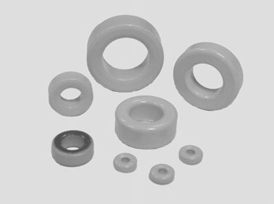
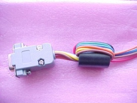
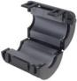
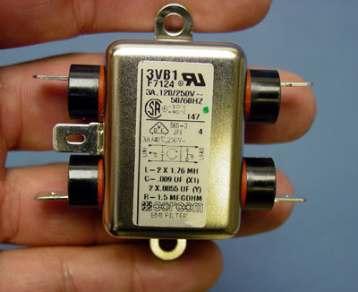
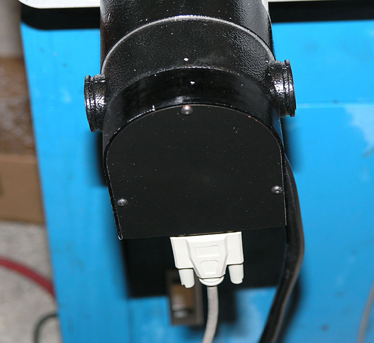
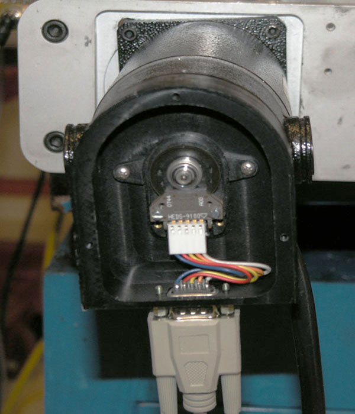
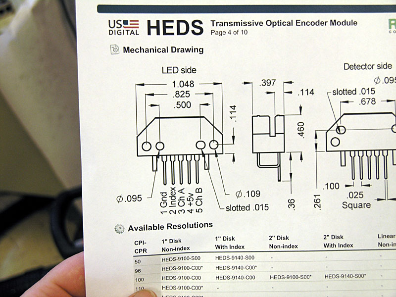
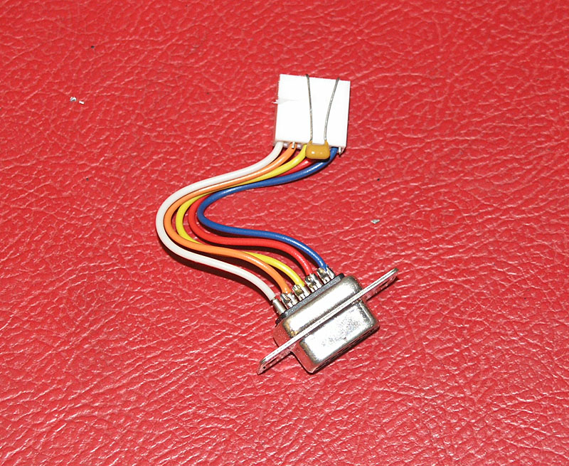

CNC Machine Noise Cures, Part 2
Diagnosis
Tips
Your machine is behaving as though haunted--limits trip
unexpectedly, motors don't move right, or your servos act as if the encoders
aren't connected properly. What to do?
Diagnosis is a bit of trial and error. If you can figure
out where the noise is coming from through a process of elimination, you
will be that much closer to deciding what to do about it.
Try Disconnecting the VFD
Pull the plug on your VFD and see whether the noise problems
continue.
Disconnect your DC supply
If the shutting down the VFD didn't help, next try shutting
down the DC supply to your steppers. This one is hard with servos because
the encoders will fault the system out if the shafts don't turn. With
steppers, things will move merrily along juts as though everything was
working. If you're seeing false limits hit with the DC shut off, you know
the noise isn't due to your step motors.
Now try some combinations
If you've disconnected various motors until the noise
problem stops, congratulations, you're on a good track. Now try different
combinations of reconnection to see where the problem lies. Each individual
motor is a possibility. Perhaps the shielded ground connection for a particular
motor is not making a good connection and vibration has shaken it loose.
When you find your bad actor, check that sort of thing very carefully.
Other
Tips
If you've taken the preventative steps described above
and still have noise problems, consider investigating the tips from this
section.
Use Mach 3 Debounce
I put this one first because it is easy to try. Limits
and similar inputs can be debounced in software using Mach 3. This can
help to reduce noise sensitivity. Most sources recommend trying a debounce
value of 1000 to see if it improves the situation. Values as high as 2000
are sometimes recommended.
Sometimes this debounce option can cause problems in homing
circuits, such as strange reversals of motion, so be on the lookout. It
is not a panacea. Lower values of debounce may make your switches more
accurate and repeatable. It's worth experimenting to find the optimum
lowest value that eliminates false hits from noise.
Ferrite Beads
Ferrite beads
can really help on noise problems. Pop a bead onto each power line--AC
to power supplies, DC to each Gecko, +5V logic supply, etc. The beads
eat the noise. Ferrites
are particularly good for VFD noise and should be one of the first things
tried after shielding the cables.
They come in two
forms:

Raw ferrite beads: thread the wire through them:

Wire threaded through a ferrite bead...

Clamp-on ferrite: ideal for power cords and adding
after the fact...
Add a Low Pass Noise Filter
Low pass noise filters: These will primarily be of use
on limit switches and other connections that don't need to respond blindingly
quickly. A simple resistor and capacitor may be used to create the filter.
Values of 3K ohms and
0.1 microfarad yield an upper cutoff frequency of 500 Hz. So, signals
changing faster than 500 Hz will tend to be cut out by the filter. I wouldn't
bother with one proactively, but if you are finding noise on your limit
switch circuits, you should try one. Position it as close to the breakout
board end of the line as possible.
Source for Professional Noise Filters
Try Vortex Technologies. They make a variety of devices
that may be helpful. These include line filters as well as more innovative
devices like their Ground Transient Eliminator, which can be used to clear
up noise on the ground lines.
Another source of line filters is Ajax
CNC which has them for $20:

EMI Line Filter stops noise from
coming in your AC lines...
These filters are generally used to keep
noise from coming in the AC line. For example, if noise is glitching your
PC, put one of these between the AC outlet and the PC power supply.
Use Suppressor Diodes With Mechanical Relays and Solenoids
Mechanical relays and solenoids (are you using solenoid
switches to operate pneumatic systems or turn coolant on and off?) can
create noise as the magnetic field collapses when power is cut to these
devices. A
simple 12V relay can generate up to 1500V in this way when current
to its coil is cut!
A number of sources recommend placing a rectifier diode
in parallel with the relay coil and it will eliminate these transients
to the point where noise problems are greatly reduced. The difficulty
is that the diode will also slow the speed with which the relay operates,
which can lead to tack welding of the relay contacts as they spend too
long in close proximity while opening and arcing across the small gap
creates the tack welding effect. This phenomenon only affects normally
open relay circuits, and the diode method is fine for normally closed.
More complex suppression methods may be helpful in preserving
the dynamic response of the relay and eliminating this tack welding problem.
A rectifier and Zener diode combination produces optimum results. However,
it also turns out a resistor installed in parallel with the coil can do
a better job than the diode will alone while preserving good dynamics.
Resistances in the relatively small range of 82 to 220 ohms will work
best for this application. Make sure your resistor is up to the current
demands of the application.
Put Plasma Cutters On A Separate Ground
Plasma cutters throw out huge amounts of noise as you
would expect. Make sure they're on a separate ground that doesn't meet
up with the ground for the rest of your system until it gets back to the
mains. If the plasma noise is bad enough, I would consider looking at
something like the Vortex Technologies
Ground Transient Eliminator.
Physical Separation When All Else Fails
If you can arrange to move noise producers further from
the components hit by the noise, this can help. Don't set your plasma
cutter right under the control circuitry for your CNC plasma table! Try
to move your VFD further from the drive electronics. Put the VFD at the
top of the mill near the motor on the left side and the drive electronics
cabinet down low on the right side, for example.
Sometimes Your Breakout Board is the Problem
I read one account where a
fellow was sent the wrong version of his breakout board which led to noise
trouble. I'm not sure how they figured it out, but the problems went
away when he swapped boards.
Ground all Your Power Supplies to the Same Ground
You've got separate chassis for VFD, PC, and the rest
of your CNC electronics. You've grounded those chassis together, right?
Now make sure the power supplies in each chassis are grounded together
so that no supply is floating relative to ground. There is a great series
of posts on
this CNCZone thread about common grounds for power supplies.
Bypass Capacitors Can Help With Noise
US Digital HEDS encoders are very common on servo systems
because they're cheap, and come with a lot of inexpensive servos. Unfortunately,
they're very prone to noise sensitivity.
Mariss
F. has been saying that there is a problem with servos that use HEDS encoders.
These are the usual cheap US Digital encoders, and they're exactly what
I have in my homeshopcnc servos. Some folks have said they had no problem
with their encoders, others have said they have all kinds of problem.
Mariss proposed a fix that involves some simple bypass capacitors, so
I took it on myself to install the capacitors on my servos. Here is what
it takes:

3 Allen-head
bolts hold the rear cover on the servo...

Here's what
the innards look like. The HEDS encoder is connected by a simple little
harness...

We're bypassing
the power supply to filter out noise, so the capacitor goes between pins
1 (Gnd) and 4 (+5V)...

The easiest
thing is just to bend the capacitor leads, insert into the connector,
and then reinstall...
The ceramic 1uF
capacitor goes across the HEDS power supply terminals at the encoder.
Use Digikey BC1151CT-ND capacitors. They cost $1.80 for a package of 10
pieces and Digikey was happy to send them to me without requiring a minimum
order.
The result? I
immediately noticed my servos were quieter when not moving--less dithering.
Some odd glitches and faults that would happen every now and again while
jogging went away. Best of all, my part was suddenly being more accurately
made--I was getting some false feedback from the encoder due to noise.
This is a quick
and easy fix: highly recommended if you have HEDS encoders!
I've heard other
folks mention the same little caps work wonders for home and limit switches
(put the cap at the switch across the contacts) and even for probing and
electronic edge-finders.
Software Debounce in Mach3
Mach3 has a very nice capability to debounce contacts
on a lot of its incoming lines. This is where the software looks at the
signal and treats it as one single pulse even if it gets multiple pulses
when the pulses are close enough together. You can specify an appropriate
time period.
Oddball: To ground or not to ground the Gecko heat
sink?
This
fellow seems to feel that a scratch in the anodizing (hard anodizing
provides isolation and doesn't conduct well) allowed his Gecko Drive to
ground and create noise problems. I'm still not sure what I make of it.
I would have thought you were supposed to ground the darned things.


Be sure to check out G-Wizard, our Machinist's Software!